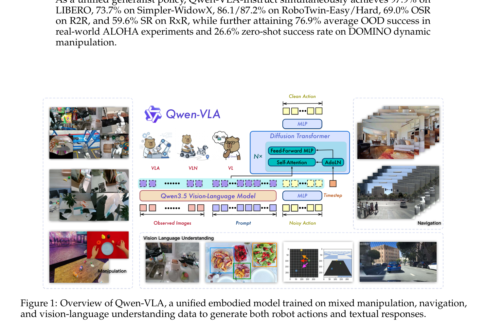
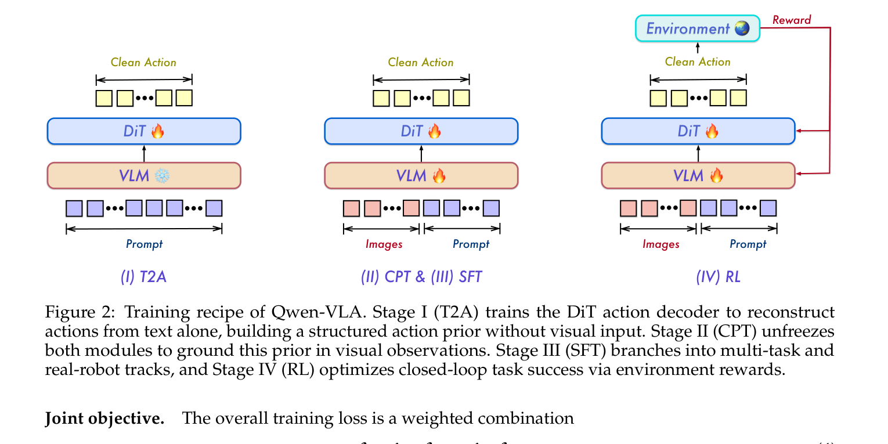
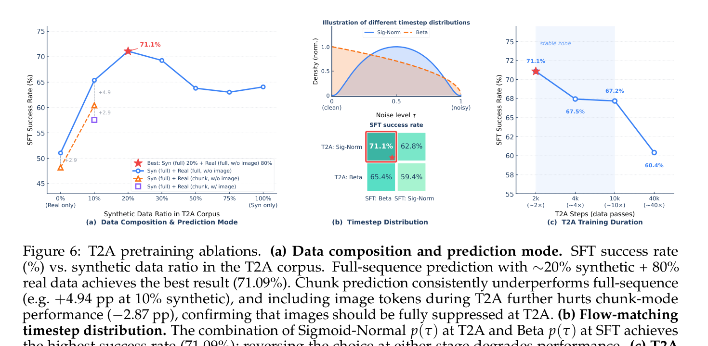
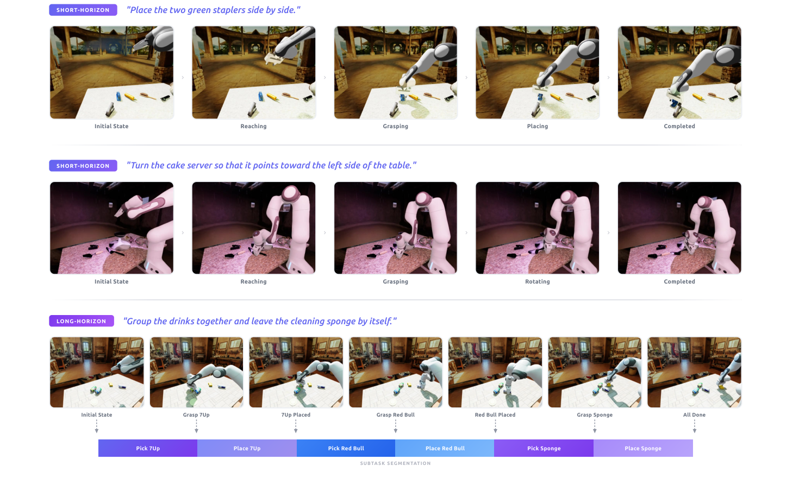

Paper Reading · Robotics World Models
Qwen-VLA：把 manipulation、navigation 和轨迹预测塞进同一个动作接口
这篇论文的核心不是“又做了一个机器人 policy”，而是把具身任务统一成 conditioned action-and-trajectory prediction：同一个 Qwen3.5 VLM backbone， 同一个 DiT flow-matching action decoder，通过 embodiment prompt 和 mask 处理不同机器人、不同控制频率、不同动作维度。 最值得注意的是 T2A：先让 DiT 在没有图像的情况下学会“语言到动作的解压”，再把视觉 grounding 接上去。
0. 一句话结论
痛点：现有 embodied models 往往按 manipulation、navigation、dexterous hand、egocentric human trajectory 分裂成不同模型和接口，很难像 VLM 一样统一扩数据。 核心招：Qwen-VLA 用 Qwen3.5-4B 做视觉语言 backbone，再接一个约 1.15B 参数的 DiT flow-matching action decoder； 所有任务都写成“图像/视频 + 指令 + 具身描述 -> 连续动作或轨迹 chunk”，并用 T2A、CPT、SFT、RL 四阶段训练。 效果：Qwen-VLA-Instruct 在 LIBERO 97.9、Simpler-WidowX 73.7、RoboTwin Easy/Hard 86.1/87.2、R2R OSR 69.0、RxR SR 59.6，真实 ALOHA OOD 平均 76.9，DOMINO zero-shot SR 26.6。 代价：它靠巨大混合数据和复杂训练 recipe；统一接口并不等于统一物理语义，很多泛化仍来自 prompt、mask、normalization 和数据覆盖。
- 这篇到底在解决什么
- 把“机器人控制任务长得很不一样”改写成“都在预测未来动作/轨迹张量”。统一的不是每个维度的物理含义，而是模型接口、训练目标和条件上下文。
- 核心 insight
- T2A 很关键：先把 DiT 训练成语言条件下的动作分布解压器，后续视觉训练才不需要同时学动作先验、视觉 grounding、denoising 动力学和机器人 convention。
- 代码状态
- 论文首页给出
https://github.com/QwenLM/Qwen-VLA，但我在 2026-05-29 查询 GitHub API 和 README 都是 404。因此下面的实现解读以论文报告为准，不把未公开代码当作事实。
1. 论文定位
Qwen-VLA 是一个 generalist VLA / VLN / trajectory prediction foundation model，目标不是只刷某个 manipulation benchmark， 而是证明 manipulation、navigation、人类第一视角手部运动、自动驾驶轨迹/VQA、空间 grounding 可以在同一个 VLM+action-decoder 框架里共同训练。
和 π0/π0.5、OpenVLA、RDT-1B、GR00T 这类路线相比，它的关键差异有三点： 第一，它把 navigation waypoint 和 robot action 都看成连续轨迹 chunk； 第二，它不用每个 embodiment 一个专门架构，而用文字 prompt 描述平台和控制 convention； 第三，它把动作 decoder 的预训练拆出一个纯 text-to-action 阶段，避免刚接视觉时 decoder 还不会“动作语言”。
| 路线 | 动作接口 | 主要问题 | Qwen-VLA 的差异 |
|---|---|---|---|
| Specialist policy | 每个 benchmark / robot 单独训 | 强但碎片化，跨平台迁移弱 | 一个 generalist 模型横跨 LIBERO、Simpler、RoboCasa、RoboTwin、VLN |
| VLM + action head | 通常只针对一种 action space | 不同维度、频率、控制语义很难拼 | 统一成 \(Y\in\mathbb{R}^{H\times K}\)，用 mask 和 prompt 区分语义 |
| 纯 VLA imitation | demo likelihood | SFT 不直接优化闭环成功 | SFT 后再用 SimplerEnv sparse success reward 做 PPO |
| 视觉预测式 world model | 预测 future image / latent | 可解释但动作落地仍要规划 | 强调直接输出 executable action chunk |
2. 方法总览
论文的宏观 pipeline 可以压成下面这条链：

visual context o_t: images / video / history window
instruction x: natural language task
embodiment prompt e: robot tag, arm count, control convention, FPS, chunk size
optional task id z
-> Qwen3.5-4B VLM backbone
early-fused visual/text tokens
multi-view images are wrapped by view tags
-> hidden states condition the action expert
-> DiT flow-matching action decoder
input: noisy action/trajectory chunk Y_tau, timestep tau
output: velocity field v_theta
-> Euler denoising
output: clean action / waypoint trajectory Y_{t:t+H-1}
关键张量是 \(Y\in\mathbb{R}^{H\times K}\)。\(H\) 是预测 horizon，\(K\) 是最大通道数。 某个 embodiment 实际只用前 \(c\le K\) 个通道，剩下 zero-pad；有效位置由 mask \(M\in\{0,1\}^{H\times K}\) 标记。 这样 DiT 参数共享，但每个数据源保留自己的控制 convention。
3. 关键创新点
创新点 1：统一的是张量接口，不是强行统一物理语义
旧方法为什么不行：不同机器人数据的 action semantics 差异太大：WidowX 是 delta EEF + gripper，ALOHA 可有 dual arm joint，dexterous hand 有 hand joints，VLN 是 \((\Delta x,\Delta y,\Delta\theta)\) waypoint。 如果硬转成一个物理动作空间，会丢语义或引入大量 retargeting 假设。
它怎么改：每个样本都放进同一个 \(H\times K\) 张量，实际有效通道前置，剩余 padding；同时 prompt 明确告诉模型当前平台、控制频率、horizon 和 control convention。
为什么会有效：它把“多 embodiment”从架构问题变成条件建模问题：DiT 只需要学“在当前 prompt 规定的坐标系里输出有效通道”。 对大模型来说，文字 prompt 是强条件；对优化来说，mask 能阻止 padding 维度污染梯度。
代价/限制：这不是物理层面的真统一。两个 dataset 的第 1 维都放在 \(Y_{:,0}\)，但可能一个是 EEF x delta，一个是 joint angle。 模型必须靠 prompt 和数据分布区分它们；如果 prompt 不清楚或数据冲突，泛化会变脆。
创新点 2：embodiment-aware prompt conditioning
旧方法为什么不行：多机器人训练常见做法是给每个机器人一个 adapter/head，或者靠 hidden robot id。这样能跑，但可扩展性差，也不自然支持新平台。
它怎么改：每条数据前都加一段自然语言描述：
The robot is {robot_tag} with {single arm / dual arms}[, waist][, and mobile base].
The control frequency is {FPS} Hz.
Please predict the next {chunk_size} control actions to execute the following task:
{ori_instruction}.为什么会有效：它利用 VLM 已有的 instruction following 能力，把 embodiment choice 变成可读条件。 更重要的是，FPS 和 chunk size 明确规定了 action token 的时间语义，否则同一个 \(H=16\) 在不同控制频率下代表完全不同的物理时间。
代价/限制：prompt conditioning 的边界是：它只能表达“已知 convention”，不能凭空解决 kinematics retargeting。 新 robot 如果动作维度、控制 delay、夹爪语义和训练分布差很多，仍需要数据或校准。
创新点 3：DiT flow-matching action expert
旧方法为什么不行：VLM 本体适合离散 token prediction，但机器人动作是高频连续信号。直接让 LM head 产数字或离散动作 token，会在精度和稳定性上吃亏。
它怎么改：Qwen-VLA 在 VLM 后接单流 DiT action expert。它把 VLM hidden states 和 noisy action chunk 拼到一个序列里，经过 self-attention、AdaLN timestep conditioning、多段 RoPE，最后预测 flow velocity。 论文报告 action expert 约 1.15B 参数，其中 16 个 DiT blocks 占 1.13B。
为什么会有效：VLM 负责“看懂任务、物体、空间关系、机器人 convention”，DiT 负责“把连续轨迹采样出来”。 这类似把认知和小脑式运动生成分开：backbone 不必承受连续动作细节，decoder 也不必从零学视觉语义。
代价/限制：DiT 很重，推理要几步 Euler integration；如果实时控制频率很高，latency、batching、action chunk overlap 都会成为工程问题。
创新点 4：T2A，把动作 decoder 先训成语言条件解压器
旧方法为什么不行：如果一开始就联合图像、语言、动作训练，随机初始化的 DiT 既要学 action distribution，又要学 flow denoising，又要学视觉 grounding。 同时每一步还要跑图像编码，成本高，且噪声梯度可能扰动已经很强的 VLM backbone。
它怎么改：Stage I 冻结 VLM，只训练 DiT；输入只有 task instruction 和 embodiment prompt，不给图像。 作者把这看成 compression/decompression：语言里的“pick up the red cup”很短，但动作轨迹是几百上千维连续数值；T2A 让 decoder 先学会从压缩语义解压出动作分布。

为什么会有效：T2A 先建立“语言意图 -> 动作分布区域”的先验，后续 CPT 才能把视觉变量接入这个先验，而不是边学运动语法边学视觉。 消融里，纯 real T2A 是 51.04，纯 synthetic 是 64.06，约 20% synthetic + 80% real 达 71.09；full sequence 比 chunk 更强；T2A 加图像反而降 2.87 pp。
代价/限制：T2A 学到的是“语言平均动作 prior”，没有视觉时不能处理具体物体位置。它必须被后续 CPT/SFT grounding，否则会产生语义合理但场景不对的动作。
创新点 5：PPO 接到 flow-matching policy 上
旧方法为什么不行：SFT 只优化 demo likelihood，闭环 rollout 时一旦偏离 demonstration support，policy 可能连锁出错。 但 flow-matching policy 没有 autoregressive softmax 那种直接 log-prob，PPO 的 importance ratio 不好算。
它怎么改：论文把确定性的 probability-flow ODE 转成带噪 Euler step 的 SDE：每个 denoising transition 都变成显式 Gaussian，log-prob 可以解析计算。 rollout 时保存中间 denoising states，PPO 更新时用当前参数重算 velocity field。默认每个 rollout 随机选一个 denoising step 来估 log-prob，只多一次 DiT forward。
为什么会有效：RL 直接优化 task success，不再只模仿 demonstration。论文的 RL rollout 只来自 SimplerEnv，但在 RoboCasa、RoboTwin、LIBERO、DOMINO 上基本保持或小幅提升，说明没有明显 catastrophic forgetting。
代价/限制：RL 只用 sparse binary reward，仍依赖 simulator 的 ground-truth success；真实世界 RL、contact-rich recovery、long-horizon failure handling 还没有解决。
4. 训练和推理流程
训练分四段。T2A：冻结 VLM，只训 DiT，输入文本和 embodiment prompt，目标是完整动作序列。CPT：解冻 VLM 和 DiT，在机器人轨迹、人类 egocentric、synthetic simulation、navigation、VL 数据上联合训练。SFT：从 CPT 分出多任务和真机分支，使用高质量 demo、VQA、spatial grounding、VLN。RL：从 multi-task SFT checkpoint 出发，用 SimplerEnv sparse success reward 做 PPO，得到 Qwen-VLA-Instruct。
推理时，用户给图像/视频、任务指令和 embodiment prompt。VLM 编码上下文，DiT 从 Gaussian noise 开始，通过少量 Euler steps 从 \(\tau=1\) 积分到 \(\tau=0\)，输出一个 action chunk。 对 manipulation 是未来机器人动作；对 VLN 是 waypoint trajectory；对 egocentric human data 是 wrist + hand articulation trajectory。
| 阶段 | 输入 | 训练模块 | 目标 |
|---|---|---|---|
| T2A | text + embodiment prompt，无图像 | DiT action decoder | 语言条件 action prior |
| CPT | 图像/视频 + text + action/trajectory | VLM + DiT | 视觉 grounding + 多数据源预训练 |
| SFT | 高质量 demo + VL/VLN 数据 | VLM + DiT | 任务精度和 instruction following |
| RL | on-policy rollout | policy + value head | 闭环 task success |
5. 公式/算法逐项讲解
公式 1：masked flow matching loss
对 clean target \(Y_0\in\mathbb{R}^{H\times K}\) 和 noise \(Y_1\)，线性插值得到 \(Y_\tau\)。模型预测 velocity \(v_\theta\)，目标 velocity 是 \(Y_1-Y_0\)。 关键是每个 active channel 先单独平均，再对 active channels 均匀平均：
实现意义：不同 embodiment 的 channel 数不同，如果直接对所有元素平均，高维机器人会主导梯度。两级平均让每个有效控制维度权重接近一致。
公式 2：joint objective
\(L_{vl}\) 是标准 next-token prediction，覆盖 VQA、caption、spatial grounding、fine-grained embodied action caption 等。 它的作用不是直接控制机器人，而是防止 action-heavy co-training 把 Qwen3.5 的视觉语言能力训坏。
公式 3：quantile normalization
每个 dataset、每个 action dimension 用 1% 和 99% 分位数归一化。这样不同平台的尺度被压到同一区间，但不会强制它们共享物理含义。
公式 4：PPO for flow policy
PPO 仍是经典 clipped objective，但 action 是一个 \(H=16\) 的 action chunk，不是单步 token。论文把每个 chunk 视作一个 transition，reward 和 advantage 都按 chunk 粒度计算。
难点在 \(\log\pi_\theta\)。论文通过给 Euler denoising 注入 controlled noise，让每一步是 Gaussian transition，从而能算 log-prob。
6. 训练-推理对齐检查
- T2A 训练无图像，推理有图像：这是故意的。T2A 学 action prior，CPT/SFT 再补视觉 grounding。
- 多 embodiment 共用 DiT：共用的是 latent decoder 和 tensor interface，不是每个通道的物理语义。prompt 和 mask 是对齐关键。
- SFT imitation vs RL success：SFT 优化 demo likelihood，RL 优化 sparse success。RL 只在 SimplerEnv 做，但结果显示在若干外部分布上未明显遗忘。
- state conditioning 默认不用：RoboTwin 消融里显式 proprioceptive state 只带来很小增益；论文因此选择让 embodiment prompt 成为默认平台接口。
- 视觉语言能力的保留：VL data 在复杂 benchmark 上有收益，RoboCasa-GR1 提升 4.9 pp，RoboTwin-2.0 提升 4.6 pp；简单 benchmark 上无明显干扰。
7. 实验复盘
主结果
| 评测 | Qwen-VLA-Base | Qwen-VLA-Instruct / w pretrain | 解读 |
|---|---|---|---|
| LIBERO | 90.8 | 97.9 | 接近最强 specialist，说明 generalist 没明显牺牲单臂桌面操作 |
| Simpler-WidowX | 64.3 | 73.7 | RL 主要在 SimplerEnv 上做，提升最明显 |
| RoboTwin Easy / Hard | 64.3 / 66.4 | 86.1 / 87.2 | SFT 对双臂任务帮助很大 |
| Real ALOHA in-domain | from scratch 48.5 | with pretrain 83.6 | 同架构对比，收益主要来自预训练 |
| Real ALOHA OOD | from scratch 36.2 | with pretrain 76.9 | 颜色、实例、背景、指令泛化都明显更强 |
| DOMINO zero-shot | SR 21.1 / MS 37.4 | SR 26.6 / MS 39.5 | 动态物体无专门训练仍超过若干 dynamic fine-tuned baseline |
消融是否支撑结论
T2A 消融比较有说服力：T2A 不是随便 warm start，而是一个特定的语言-动作 prior 学习阶段。 图像在 T2A 里反而伤性能，说明它真的想把 decoder 压到“从语言/具身 prompt 解压动作”的角色上。 多 embodiment projection 消融也说明 Zero-Padding、Multi-MLP、Concat 性能差异很小，因此轻量 zero-padding 是合理工程选择。

批判点
- 数据和算力 confound 很大：预训练混合包含 10,000+ 小时公开机器人数据、1,000+ 小时私有真机、8M synthetic trajectories、人类 egocentric、导航、自动驾驶 VQA、general VL。性能提升不容易归因到单一设计。
- generalist vs specialist 对比不完全公平：specialist 模型可能没有同样的多源预训练和 post-training；Qwen-VLA 也不是“无适配”完成所有真机任务，ALOHA 有 real-world fine-tuning。
- 代码未公开：论文给出 GitHub 链接但目前 404，很多实现细节无法核对，例如 action decoder 具体配置、T2A sampling、RLinf 集成和数据处理。
- 长期自主部署还没解决：限制部分也承认，当前评测仍偏短时 benchmark，long-duration failure recovery、episodic memory、world modeling 仍是未来工作。
8. 可复现清单
- Backbone：Qwen3.5-4B native multimodal VLM。
- Action decoder：single-stream DiT flow-matching expert，约 1.15B 参数，16 个 DiT blocks。
- Action tensor：\(Y\in\mathbb{R}^{H\times K}\)，zero-padding + validity mask。
- Prompt：必须写 robot tag、arm configuration、control frequency、chunk size、task instruction。
- Normalization：每 dataset 每 action dim 用 1/99 分位归一化到 [-1,1]。
- Pretraining mix：robot manipulation 74.2%，egocentric 6.0%，navigation 7.5%，synthetic 3.7%，general/spatial/driving/caption 共 8.5%。
- T2A：无图像，full-sequence prediction，20% synthetic + 80% real 最优，2k steps 最优。
- SFT loss weight：论文写 VL next-token 0.1，manipulation/navigation action 1.0。
- RL：PPO + GAE，\(\gamma=0.99\)，\(\lambda=0.95\)，\(\epsilon=0.2\)，actor LR \(5\times10^{-6}\)，value LR \(10^{-4}\)，每 rollout batch 4 epochs。
- 推理：flow action chunk 通过少量 Euler integration 生成，evaluation temperature 从 rollout 的 1.0 降到 0.6。
【不确定】论文没有公开完整训练代码和 checkpoint 配置。合理猜测有三种： 1. action decoder 的 DiT hidden size、RoPE section、AdaLN 细节继承内部 Qwen3.5 工程； 2. 多数据源 sampling ratio 除 Table 1 外还有 per-dataset temperature/power sampling； 3. 真机 ALOHA fine-tune 使用了额外数据清洗和 action smoothing。 验证方式是等官方仓库开放，优先查 configs、dataset mixer、action projection、RL rollout/logprob 实现。
9. 对 FastWAM / 具身操作的启发
对你的 FastWAM 来说，最值得搬的不是“Qwen3.5 + 1.15B DiT”这个规模，而是三条表示设计原则。
- 把 action interface 和物理语义解耦：可以先统一成 padded action/trajectory tensor，再用 task/embodiment/context prompt 解释维度含义。
- 先学 action prior，再接视觉：如果你有 one-shot task execution，先把 demonstration 压成 stage/action trajectory prior，再让视觉 observation 做 grounding，会比端到端从图像直接学动作稳定。
- 任务执行不是单步 action，而是 chunk-level trajectory：Qwen-VLA、Wall-OSS、Demo-JEPA 都在往 chunk/subgoal/action-prior 方向靠。FastWAM 可以把 \(Y_{t:t+H-1}\)、progress state、latent goal 放在同一个 action execution object 里。
一个可用的 FastWAM 建模草图：
one-shot demo
-> parse stages / progress / embodiment convention
-> build action prior token or latent trajectory prior
current observation + task + embodiment prompt
-> world/action model backbone
-> condition on prior + current visual grounding
-> predict action chunk + expected progress delta
-> execute / monitor / replan10. 可能的改进方向
- 加 episodic memory / world state：改动点是让 VLM 输入不止当前帧，而是维护 persistent task state；收益是长程恢复和遮挡处理；风险是上下文成本暴涨；实验用长时收纳/多房间导航验证。
- 动作维度从 zero-padding 改成 schema-aware projection：收益是减少 prompt 混淆；风险是削弱统一 decoder；实验比较 new robot few-shot adaptation。
- RL reward 从 binary success 扩展到 progress reward：可以接 ProcVLM 类 progress estimator；收益是更密集 credit assignment；风险是 reward hacking；实验看 SimplerEnv sparse vs progress-shaped PPO。
- 联合预测 future latent state：在 action chunk 外加 world-model head；收益是动作后果可检查；风险是训练目标竞争；实验看 DOMINO dynamic 和 failure prediction。
- 公开后做代码级 ablation：验证 T2A、VL co-training、Zero-Pad、state conditioning 在相同数据预算下的真实贡献，避免把数据规模误当方法贡献。
11. 速读备忘卡
- Qwen-VLA 的统一对象是 action-and-trajectory chunk，不是单一机器人动作语义。
- Qwen3.5-4B 负责视觉语言理解，DiT flow decoder 负责连续动作生成。
- Embodiment prompt 是平台接口：robot tag、arm count、FPS、chunk size、control convention。
- 动作张量 \(H\times K\) 用 zero-padding 和 mask 处理异构维度。
- T2A 是核心：无图像，先学语言到动作的结构化解压。
- T2A 最优组合：约 20% synthetic + 80% real、full-sequence、Sigmoid-Normal timestep、2k steps。
- CPT 把 action prior 接上视觉 grounding；SFT 做 task specialization。
- PPO 被接到 flow policy 上，靠 noisy Euler transition 估 log-prob。
- 真实 ALOHA 从 scratch 48.5，pretrained fine-tune 83.6；OOD 36.2 到 76.9。
- 代码当前不可核验，方法强但也高度依赖数据规模和工程 recipe。
Sources
- Qwen-VLA arXiv abstract
- Qwen-VLA PDF
- Qwen-VLA project/blog page
- Qwen-VLA GitHub link from paper（2026-05-29 查询时返回 404）